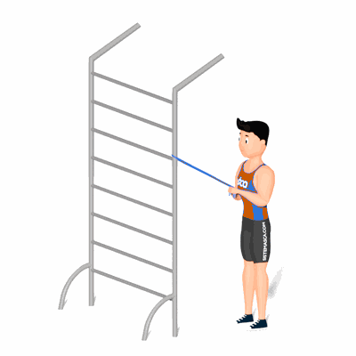

Tríceps Extensão com Faixa Elástica

O exercício auxilia no fortalecimento e hipertrofia dos músculos tríceps, com enfoque o tríceps braquial.
Ficha Técnica
Tipo: Funcional
Grupo Muscular: Tríceps
Aparelho: Nenhum
Músculos: Nenhum
Como realizar
- Fique em pé com as pernas em paralelo;
- Coloque razoavelmente alto o elástico em um apoio;
- Segure o elástico com as mãos flexionando o cotovelo;
- Em seguida, realize a extensão do cotovelo;
- Retorne a posição a inicial e repita os movimentos.
 RC STORE
RC STORE